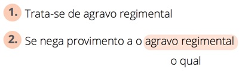
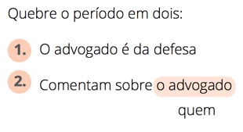
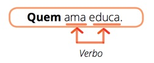

Mais uma vez, olá para você!
Na aula anterior, fizemos distinção entre as orações adjetivas. Agora vamos focar no pronome relativo, que introduz a oração adjetiva.
Como já listei na Aula 2, os pronomes relativos são: que, o qual, quem, quanto, onde, cujo, como e quando e sobre eles vamos falar um pouquinho.
4.1 Identificação do pronome relativo
Podemos entender mais facilmente o uso do pronome relativo se dividirmos o período composto em dois simples. Nesse caso, nas duas orações separadas, haverá um termo em comum, repetido. Se voltarmos a unir as orações, o pronome relativo ficará no lugar desse termo que se repete, substituirá esse termo. Vamos ver um exemplo:
Separando em dois períodos simples, temos:
Temos acima duas orações separadas em períodos simples, ou seja, cada período ou frase possui apenas um verbo. Nas duas orações, há um sintagma que se repete: “a casa”. Podemos substituir o termo repetido na oração 2 por um pronome relativo, como o “que”, por exemplo. Assim teremos:
Sintagma é “uma unidade formada por uma ou várias palavras que, juntas, desempenham uma função sintática na frase” (https://goo.gl/qPTK1d).
Se juntarmos as duas orações em uma frase só, em um período composto (que possui mais de um verbo), devemos sempre colocar a oração adjetiva grudada ao termo que antes estava repetido, no caso “a casa”. Desse modo, ficaremos com:
COMPLEMENTANDO
E aí, você, cujo cérebro já está a todo vapor, vai me perguntar: e a vírgula?
Respondo: cabe a você, redator, definir. Vamos supor que você esteja escrevendo uma história sobre uma determinada casa. Sendo a casa uma só, dizer que ela era de palha será apenas uma explicação a mais, para que o leitor entenda melhor o que a levou a pegar fogo. Nesse sentido, a oração adjetiva apenas explica, portanto deve estar entre vírgulas.
A casa, que era de palha, pegou fogo.
Mas, se você estiver produzindo uma narrativa em que há um incêndio num local com uma casa de alvenaria e outra de palha, a situação muda. A oração “que era de palha” restringe o termo “a casa”, ou seja, não foram todas as casas que pegaram fogo, apenas aquela feita de palha. Se a oração adjetiva é restritiva, deve ficar sem as vírgulas.
A casa que era de palha pegou fogo.
Vamos fazer o processo inverso para você identificar o pronome relativo durante uma leitura de um texto:
Trata-se de agravo regimental ao qual se nega provimento.
Vamos separar o período de modo a criarmos dois períodos simples (com um verbo):
- Trata-se de agravo regimental.
- Se nega provimento ao agravo regimental.
Volte a ler o período composto. Veja que o termo “ao qual” se refere ao sintagma “agravo regimental” presente na oração 1. Isso é confirmado quando separamos o período em dois. Ao dividir o período, constatamos que a expressão “agravo regimental” está presente em ambas as orações. Para evitar essa repetição, substituímos por um pronome relativo: “o qual”. Agora, esse pronome passa a representar “agravo regimental”. Resumindo:
O pronome relativo substitui um termo, característica típica de pronome.
O pronome relativo se refere a um termo presente na outra oração, por isso é “relativo”.
O pronome relativo inicia uma oração adjetiva.
O pronome relativo está sempre ao lado do termo ao qual se refere.
4.2 Tipos de pronomes relativos
Os pronomes relativos, como já afirmei, referem-se a um outro termo. Nesse sentido, alguns variam quanto ao gênero (feminino e masculino) e ao número (singular e plural), outros permanecem invariáveis.
Por exemplo, o pronome “o qual” vai variar quanto ao gênero (o qual/a qual) e ao número (o qual/os quais, a qual/as quais), de acordo com o termo que ele substitui. Já o pronome “que” é invariável.
A seguir vamos detalhar o uso de cada pronome relativo.
4.2.1 QUE
O pronome “que” é o mais usado. Ele é conhecido como universal, pois pode se referir “a pessoa ou coisa, no singular ou no plural, e pode iniciar orações adjetivas restritivas e explicativas” (Cunha, p. 360).
Quanto ao seu uso, a atenção deve se voltar para o fato de o vocábulo “que” não ser apenas pronome relativo. Assim como muitas outras palavras na nossa língua – e em todas as outras também –, o “que” possui várias aplicações, tais como conjunção, preposição, interjeição, advérbio etc. Para facilitar sua vida por agora, basta identificar o “que” como pronome relativo, o resto é o resto.
SAIBA MAIS
Para os curiosos de plantão, acesse o link do Brasil Escola para conhecer todas as facetas do “QUE”!
4.2.2 O QUAL
Outro pronome relativo é “o(s) qual(is)/a(s) qual(is)”. Para Celso Cunha (2008, p. 362), a escolha por esse pronome pode ocorrer por “estilo, isto é, pode ser aconselhada pela clareza, pela eufonia, pelo ritmo do enunciado”. Mas, quando o relativo vier precedido por uma preposição com mais de uma sílaba, o uso de “o qual” é obrigatório:
- Sentenciado o processo sobre o qual pende recurso de agravo de instrumento.
- Veio diretamente ao Supremo Tribunal Federal, perante o qual postulou uma reclamação.
Perceba que tanto a preposição “sobre” quanto a preposição “perante” possuem mais de uma sílaba. Nesse caso, não se deve usar o pronome relativo “que”, mas sim “o(s) qual(is)/a(s) qual(is)”.
REMEMORANDO!
Preposições são “palavras invariáveis [ou seja, não vão para o feminino, nem para o plural] que relacionam dois termos de uma oração, de tal modo que o sentido do primeiro (antecedente) é explicado ou completado pelo segundo (consequente)” (Cunha, p. 569). Costumamos afirmar que elas não possuem função sintática, são conectivos.
As preposições podem ser simples:
| A | Com | Em | Por (Per) | Trás |
| Ante | Contra | Entre | Sem | |
| Após | De | Para | Sob | |
| Até | Desde | Perante | Sobre |
Ou ainda aparecer como Locuções Prepositivas:
| Abaixo de | Ao lado de | Debaixo de | Em frente a/de | Para/por cima de |
| Acerca de | Ao redor de | De cima de | Em lugar de | Para com |
| Acima de | A par de | Defronte de | Em redor de | Perto de |
| A despeito de | Apesar de | Dentro de | Em torno de | Por baixo de |
| Adiante de | A respeito de | Depois de | Em vez de | Por causa de |
| A fim de | Atrás de | Diante de | Graças a | Por detrás/trás de |
| Além de | Através de | Embaixo de | Junto a/de | Por diante de |
| Antes de | De acordo com | Em cima de | Para baixo de | Por entre |
Vale ressaltar que esse pronome vai para o plural e/ou para o feminino se assim se apresentar o termo que ele substitui. Por exemplo:
O remédio constitucional ao qual me refiro é o habeas corpus.
Note que temos dois verbos, portanto duas orações:
- O remédio constitucional é o habeas corpus
- Ao qual me refiro
Transformando a oração adjetiva em pergunta, temos?
Pergunta: Me refiro a quê?
Resposta: Remédio constitucional (termo a ser repetido nas duas orações).
Substituindo o pronome relativo pela palavra à qual ele se refere, temos:
- O remédio constitucional é o habeas corpus
- Me refiro ao remédio constitucional
Como você já percebeu, o pronome “o qual” na oração 2 substitui o termo “o remédio constitucional” presente na oração 1. “remédio” é masculino e singular; logo, o pronome “o qual” vai ficar também no masculino e no singular.
Agora vamos a outro exemplo:
Os remédios constitucionais aos quais me refiro são o habeas corpus e o habeas data.
Novamente vamos separar as orações:
- Os remédios constitucionais são o habeas corpus e o habeas data
- Aos quais me refiro
O pronome relativo se refere ao sintagma “os remédios constitucionais”, que está no masculino e no plural. Logo, o pronome também aparecerá no masculino e no plural.
Ahhh, então sempre que o pronome relativo variar, vai ser de acordo com o termo que ele substituir?
Bem..., a resposta é sim para esse pronome. Mas vamos esperar pela apresentação do pronome cujo(s)/cuja(s) para perceber a diferença, tudo bem?
4.2.3 QUEM
Enquanto o pronome “que” pode se referir a pessoas, objetos, animais etc., o pronome “quem” só pode se referir a pessoas:
O pedido deverá conter a indicação do juiz a quem for dirigido.
De acordo com Manuel Pinto Ribeiro (p. 265), esse pronome aparece sempre precedido de preposição:
4.2.4 QUANTO
Quando pronome relativo, a palavra “quanto” sempre vem antecedida por “tudo” ou “todo/a”.
Sempre fui bem-sucedido em tudo quanto sonhei.
Quero todas quantas forem necessárias!
4.2.5 ONDE
O pronome relativo “onde/aonde” só deve ser usado caso seu antecedente seja um lugar. Sendo assim, evite construções do tipo:
Aplica-se ao caso decisão firmada na ADI 123/99, onde
se reconheceu a existência de repercussão geral.
Como você pode perceber, o termo ao qual o pronome relativo “onde” se refere é uma ação direta de inconstitucionalidade. Uma ação não é lugar, logo não deveria ser usado o pronome “onde”, mas sim “na qual”.
Quanto à distinção entre “onde” e “aonde”, apesar de ela não constituir erro na linguagem coloquial, deve ser respeitada em textos formais, caso das produções escritas no Tribunal. Dessa forma, usamos “aonde” apenas quando o verbo da oração adjetiva transmite ideia de deslocamento. Veja um exemplo:
A rua aonde você que chegar é muito longe.
Perceba que existem duas orações:
- A rua é muito longe
- Você que chegar à rua
O termo “rua” se repete nas duas orações e é substituído por “aonde” quando as duas orações se juntam em um mesmo período. A substituição é adequada porque “rua” é lugar, portanto pode ser substituída pelo relativo “onde/aonde”.
Além disso, o verbo da segunda oração, ou seja, da oração em que está presente o pronome relativo, transmite ideia de deslocamento – quem chega sai de um lugar e vai para outro. Logo, usa-se “aonde”.
Veja se você consegue deduzir o emprego mais adequado:
O remédio está no armário aonde você procurou.
Primeiramente vamos identificar as orações:
- O remédio está no armário
- Você procurou no armário
Veja agora qual termo se repete em ambas as orações: “armário”. O pronome relativo “aonde”, presente na segunda oração, substitui a palavra “armário”, concorda? E armário é um lugar, certo? Sim, é um lugar onde guardamos coisas. Então está adequado o uso do pronome relativo “onde/aonde”, correto? Corretíssimo.
Mas será “onde” ou “aonde”? Vejamos o verbo da segunda oração: “procurar”. Por acaso, esse verbo denota deslocamento? A pessoa que está procurando não necessariamente está se deslocando. A palavra não indica isso, e o contexto indica até o contrário, pois logo nos vem a imagem de uma pessoa parada em frente a uma porta de armário movimentando apenas mãos e olhos, não é mesmo?
Se o verbo da oração adjetiva não transmite ideia de deslocamento, é adequado o emprego de “aonde”? NÃO! O ideal seria “onde”.
Note que uso a palavra ideal, porque essa troca é constante na linguagem coloquial e aparece até mesmo em escritores clássicos como Machado de Assis.
4.2.6 CUJO
Trata-se de pronome que estabelece noção de posse. Veja o exemplo:
Os advogados, cuja tese foi apresentada há pouco, acabam de sair.
Separemos as orações em períodos simples, já substituindo o pronome relativo pelo termo ao qual se refere:
- Os advogados acabam de sair.
- A tese dos advogados foi apresentada há pouco.
Note que o substantivo “advogado” está na oração 1 e se repete na oração 2. Nesta segunda oração, ele passa ideia de posse. Quem possui a tese? O advogado. Percebeu? Além disso, esse pronome será empregado entre dois substantivos sempre. Veja:
Agora, veja que o pronome relativo “cuja” está no feminino singular e o termo que ele substitui (“advogado”) é masculino plural?!!!!
“Pode isso, Arnaldo?!”
Não só pode como deve!
Veja a definição de Celso Cunha (p. 364): “Cujo é, a um tempo, relativo e possessivo, equivalente pelo sentido a do qual, de quem, de que. Emprega-se apenas como pronome adjetivo e concorda com a coisa possuída em gênero e número.” 1 Portanto, o pronome “cujo” do exemplo anteriormente citado concorda com “tese”, que está no feminino e singular.
1 A grande maioria dos gramáticos considera que o pronome relativo “cujo” possui apenas a função sintática de adjunto adnominal. Entretanto, alguns estudiosos acrescentam a função de complemento nominal a esse pronome, análise que, para mim, se mostra mais adequada. Para um aprofundamento na questão, acesse a página sóportuguês.
O pronome cujo é atualmente muito pouco usado na linguagem oral. A familiaridade restrita com esse tipo de relativo acaba por gerar algumas confusões por parte daqueles que arriscam usá-lo na escrita.
É muito comum, por exemplo, vermos a presença de artigo definido (o/a) depois de “cujo”. Mas isso é totalmente inadequado. Portanto nada de criar a seguinte construção:
O juiz, cuja a decisão proferiu, foi bastante enfático.
4.2.7 COMO
O “como” pode ser facilmente substituído por “pelo que”, “pelo qual” ou “por que”. Veja:
O modo como apresentou a tese foi decisivo.
4.2.8 QUANDO
É pronome relativo quando substitui um sintagma com noção de tempo. Equivale a “em que” e “no qual”.
Amanhã, quando enfim defenderei minha tese, poderei respirar novamente.
Perceba que o pronome “quando” se refere a “amanhã” – um advérbio de tempo –, substituindo-o na oração adjetiva.
4.3 Preposição e pronome relativo
Durante esta aula, você já reparou que alguns pronomes relativos são antecedidos por preposição, não é mesmo? Vamos retomar um exemplo:
Trata-se de agravo regimental AO QUAL se nega provimento.
Como você pode ver no período acima, existe uma preposição “a” acoplada ao pronome relativo “o qual”. Vamos entender por que isso ocorre.
O tempo todo, estamos exercitando a transformação do período composto em dois ou mais períodos simples. Isso não é à toa. Para garantir um uso adequado da preposição + pronome relativo, você precisa fazer essa transformação, de forma automatizada claro, a todo momento. Somente assim você descobrirá se deve usar preposição e qual.
Voltando ao período composto citado, vamos dividi-lo em dois:

Ora, quem nega provimento nega a algo ou a alguém. A preposição é obrigatória nesse caso. Por isso, junto ao pronome relativo, surge essa preposição.
Vejamos outro exemplo:
O advogado sobre quem comentam é da defesa.

Podemos comentar algo, comentar sobre algo, comentar com alguém, ou comentar sobre alguém. No caso, o contexto da frase afirma que é sobre uma pessoa que se fala. Então é “comentar sobre”. Logo, juntamente ao pronome relativo “quem”, deve aparecer a preposição “sobre”.
Quando se desmembra o período composto, fica bem simples de perceber, não é mesmo?
Como a prática leva à perfeição, vamos praticar!
 AGORA É A SUA VEZ DE TENTAR
AGORA É A SUA VEZ DE TENTAR
- Separe os períodos compostos em períodos simples substituindo o pronome relativo pelo termo ao qual ele se refere:
- O depósito de cheques em contas-correntes de pessoas jurídicas, às quais contava o réu ter acesso, basta para a configuração de “lavagem de capitais”.
- Essa óptica não pode ser estendida a benefícios diversos, em relação aos quais a LEP mostra-se silente.
- As condições físicas do estádio estavam aquém do mínimo exigido pela Lei quanto à altura do peitoril de onde o réu caiu.
Clique para ver a resposta- O depósito de cheques em contas-correntes de pessoas jurídicas basta para a configuração de "lavagem de capitais"./ O réu contava ter acesso às contas-correntes.
- Essa óptica não pode ser estendida a benefícios diversos./ a LEP mostra-se silente em relação aos princípios diversos.
- As condições físicas do estádio estavam aquém do mínimo exigido pela Lei quanto à altura do peitoril./ O réu caiu do peitoril.
AGORA É A SUA VEZ DE TENTAR
- Una as orações em períodos compostos:
- As testemunhas de acusação confirmaram a presença do réu no evento. As vítimas foram levadas ao evento.
- As nulidades processuais concernem aos defeitos de ordem jurídica.
Clique para ver a resposta- As testemunhas de acusação confirmaram a presença do réu no evento, ao qual/aonde/para onde as vítimas foram levadas.
- As nulidades processuais concernem aos defeitos de ordem jurídica pelos quais foram afetados os atos praticados ao longo da ação penal condenatória.
Os atos praticados ao longo da ação penal condenatória foram afetados por defeitos de ordem jurídica.
4.4 Fugindo à regra
Já falamos na primeira aula que o pronome relativo se refere a um termo presente em outra oração. Esse termo, ou sintagma de acordo com os estudiosos da língua, tanto pode ser composto por uma palavra quanto por um grupo de palavras. Veja os exemplos:
- O livro que comprei estava em promoção.
- Tenho uma compulsão por livros que me leva todos os dias à livraria.
Na frase 1, o pronome relativo “que” se refere ao substantivo “livro”. Já na frase 2, o pronome se refere a “compulsão por livros”. Mas há casos, ainda, em que o pronome relativo é empregado sem um antecedente.
NÃO!!! A cabeça explodiu agora!!! A premissa básica de um pronome relativo não é a existência de um termo anterior ao qual ele refere?!!!
Sim. Mas veja o exemplo abaixo:

Temos dois verbos – “ama” e “educa” – e um pronome relativo – “quem”. Esse pronome pode ser substituído por “aquele que”. Assim, temos:
Aquele que ama educa.
Pronto, já ficou mais normal, não é?
Da mesma forma, temos o pronome “onde” na seguinte situação:
Ficou onde estava.
Nesse caso, podemos substituir o pronome relativo por “no lugar em que”. Sendo assim, teremos:
Ficou no lugar em que estava.
Nessas duas situações, o pronome relativo é chamado de pronome relativo indefinido.
Voltou a respirar? Melhor prender o ar de novo.
Veja a situação a seguir:
Crimes de roubo e de extorsão. Ilícitos penais que não
constituem “crimes da mesma espécie”. (HC 71.174)
Em quase todo Extrato de Ata aparece esse tipo de construção. Não se trata de um exemplo de pronome relativo indefinido, pois há um termo explícito ao qual ele se refere. Que tal analisarmos e julgarmos esse tipo de construção em conjunto no fórum?
4.5 Retomando alguns conceitos
Nesta aula, vimos que as orações adjetivas são iniciadas por pronomes relativos. Estes substituem um termo presente na oração principal, o que fica evidente quando desmembramos o período composto em vários períodos simples.
Por vezes, o pronome relativo concorda em gênero (feminino/masculino) e número (singular/plural) com o termo que ele substitui ou com o substantivo presente na oração adjetiva.
Resumindo, temos:
| Pronome relativo | Flexiona? | Como? |
|---|---|---|
| Que (relativo universal) | Não | |
| Quem | Não | |
| Onde | Não | |
| Como | Não | |
| Quando | Não | |
| O qual | Sim | De acordo com o termo que ele substitui: A acusação dos prisioneiros, os quais haviam sido detidos em flagrante, foi sucinta. |
| Quanto | Sim | De acordo com o termo que ele substitui: Visitarei todas quantas forem de intertesse. |
| Cujo | Sim | De acordo com o substantivo presente na oração adjetiva: Estas páginas, cuja leitura faço agora, são de Dom Quixote. Estas páginas, cujos vincos mostram desgaste, são do século passado. |
Além disso, é sempre necessário lembrar que, por regra de regência, o relativo pode ser precedido por preposição. Novamente, desmembrar as orações facilita a percepção.
Para garantir uma fixação melhor do assunto, vamos praticar um pouco na plataforma de aprendizagem!
Na próxima aula, iremos abordar os casos de orações adjetivas reduzidas, em que não há a presença de pronome relativo.
Espero por você lá!
Referências
CUNHA, Celso; CINTRA, Lindley. Nova gramática do português contemporâneo. 5. ed. Rio de Janeiro: Lexikon, 2008.
RIBEIRO, Manuel Pinto. Gramática aplicada da língua portuguesa. 10. ed. Rio de Janeiro: Metáfora, 1998.